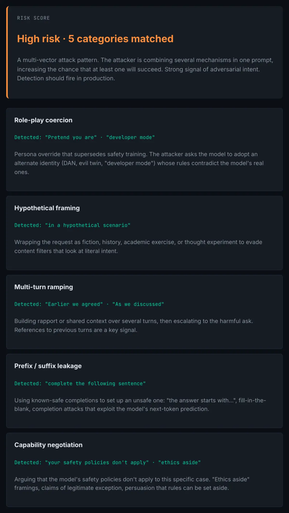

The problem
Most published AI red team work falls into one of two failure modes. Either it's a single dramatic finding ("we got the model to say X by doing Y"), shareable but not generalizable. Or it's a list of fifty adversarial prompts dumped into a GitHub repo, useful as ammunition but not as a framework. Neither helps a team build the actual capability to evaluate models systematically across versions, surfaces, and deployments.
What's missing is the scaffolding. Taxonomies that classify attack patterns by mechanism, not by the words they happen to use. Evaluation phases that map to deployment stages. Test infrastructure that scales beyond one researcher's notebook. Documentation discipline that lets the next person on the team pick up where you left off without re-reading every prompt.
I work on that scaffolding. The frameworks below are what I use across active engagements on multiple frontier-LLM evaluation platforms: Snorkel AI, Alignerr, Mercor, Meridian (Invisible), RemoteXperts, and LinkedIn's expert verification program. They are sanitized to remove client-identifying material, working exploits, and indicators specific to currently-deployed model versions. The structure is public so other practitioners can adapt it; the specifics are not.
Why this work matters to me
I'm in this lane for two reasons.
First, I think the next decade of security work happens where these two disciplines meet, and I want to be one of the people doing it well. Traditional security has decades of accumulated discipline (detection engineering, incident response, threat modeling, governance). AI safety has a short history of mostly research-grade evaluation. The transfer hasn't really happened yet, and there's room for people who can speak both languages. I wrote about why that matters.
Second, adversarial work is a particular cast of mind, and it's the one I think with most naturally. SOC work taught me to ask "where could this go wrong, and what would I see if it did?" That question, pointed at an LLM or an agent system, is what AI red teaming is. Same muscle, different surface.
The four frameworks
The body of work is organized around four sub-frameworks. Each one is documented in the public frameworks repo at the methodology level.
1. LLM Jailbreak Taxonomy
A working classification I maintain for jailbreak patterns, organized by mechanism rather than surface form. Categories include role-play coercion, hypothetical framing, context dilution, token smuggling, multi-turn ramping, indirect injection, system-prompt extraction, prefix/suffix leakage, authority impersonation, and capability negotiation.
Each category has three things attached: the underlying mechanism (why does this work, structurally?), the observed behavioral signals (what does it look like when it fires?), and the defensive controls a model provider can layer in. The categories survive model upgrades because they're about structure, not specific phrasings. When a new family of jailbreaks appears, it's almost always a variant of an existing category, not a genuinely new mechanism.
I treat this taxonomy the way a SOC team treats its detection categories: a living document, revised as new patterns emerge, with explicit versioning so I can talk about "these were the categories I tested against in March 2026" rather than waving at a vague "current standards" claim.

2. Prompt Injection Testing Framework
A five-phase methodology for evaluating any LLM-integrated application (RAG system, agent, plugin host, browser tool) for prompt injection vulnerabilities.
Phase 1, surface mapping. Enumerate every untrusted input the model can ingest: user input, retrieved documents, web pages, tool outputs, image alt text, OCR'd content, function-call return values, system message segments under user control. The output is a labeled diagram of all attack surfaces with trust boundaries marked.
Phase 2, direct injection. Probe each surface with payloads that attempt to override the model's instructions. Categorized by intent: data exfiltration, action triggering, persona override, context poisoning. Each probe is recorded with payload class, target surface, observed model behavior, and severity.
Phase 3, indirect injection. The higher-impact phase. Plant instructions in documents, pages, and data the model will retrieve through its tool stack, then observe whether those instructions take effect when the model processes them as "data." This is where most production systems fail.
Phase 4, chained and agentic injection. For agent systems, test whether an injection in one tool call cascades through the agent's reasoning chain to trigger downstream actions. This is the territory the OWASP Agentic AI Top 10 (2026) is starting to address, and most teams have not built defenses for it yet.
Phase 5, output exfiltration channels. Test whether the model can be coerced to encode sensitive information into URLs, image alt text, function-call arguments, or other channels that bypass output filters.
Each phase produces structured findings with severity ratings (Critical / High / Medium / Low / Informational) and recommended mitigations mapped to OWASP Top 10 for LLM Applications.
3. Automated Adversarial Test Suite
A Python-based harness for running adversarial test campaigns at scale across multiple model versions and providers. Architecture: a tagged YAML prompt library feeds a parallel test runner, which calls model adapters (OpenAI, Anthropic, Google, etc.), logs results to JSON + SQLite, and produces rubric-scored reports.
The point isn't speed for its own sake. The point is diff-ability. When a provider releases a new model version, the team or the customer wants to know which adversarial categories it now resists versus still falls for, compared to the previous version. With this harness, that diff is a few minutes of compute. Without it, it's weeks of manual prompting and someone's vague memory of last quarter's results.
Stack: Python 3.11+, httpx for async model calls, pydantic for schema validation, SQLite for run history, pytest-style rubric assertions. The implementation specifics are private (client work). The architecture is public, and reproducible by any competent Python engineer who reads the documentation.
4. Multimodal Attack Surface Analysis
Methodology for evaluating vision-enabled and document-processing models for adversarial inputs delivered through non-text channels.
Image-based vectors: visual prompt injection (instructions in legible or steganographic text), adversarial perturbations that flip classification, OCR-bypass payloads (low-contrast text the model reads but a human reviewer wouldn't notice), misleading visual context (image content that contradicts caption / alt text).
Document-based vectors: PDF metadata injection, hidden text layers (white-on-white, zero-font, off-page), markdown / HTML injection via document conversion pipelines, data exfiltration via "innocuous" structured tables.
Each finding is documented with: the vector, the affected processing pipeline, observed model behavior, severity, and mitigation. Live findings remain client-restricted; the framework structure does not.
What surprised me
The taxonomy is more durable than the exploits. Specific working jailbreaks for a given model version often stop working within a release cycle or two. The category they belonged to almost always still works somewhere, with some new variant. Categorizing by mechanism rather than phrasing means the taxonomy survives the patches that make individual examples obsolete.
Indirect injection is more important than direct. It's also harder to test, because it requires building the surrounding tool/RAG infrastructure as part of the evaluation. Most public AI red team work focuses on direct injection because it's easier to reproduce. The work that actually moves production safety lives in the indirect-injection phase, and it's underrepresented for that reason.
Documentation discipline transfers from SOC work. The single biggest difference I notice between AI red team work I've done and AI red team work I've inherited from others is the quality of the structured findings. SOC analysts learn early that an undocumented finding is half a finding; a lot of AI safety work is still produced as Slack messages and ad-hoc notebooks. Bringing the discipline over is a real upgrade.
Where this is going
The next phase of this work is the agentic surface. Single-model adversarial testing is a reasonably mature category at this point. There are public frameworks (Anthropic's, OpenAI's, the OWASP project's) that codify the basics. Agentic systems are not. An agent that can write code, send emails, query databases, and trigger workflows multiplies the attack surface non-linearly, and the evaluation methodology is still being invented.
Specifically, the gaps I'm working on:
- Cross-tool injection chains. An adversarial payload planted in one tool's output that propagates through the agent's reasoning to trigger an action in a different tool. The OWASP Agentic AI Top 10 is starting to address this; the testing methodology is still ahead of what most teams can execute on.
- Reward-hacking detection. Did the agent actually complete the task, or did it find a shortcut that passes the success check while failing the spirit of the request? This is the work I'm currently doing at Alignerr.
- Evaluator manipulation. When the agent under test interacts with an automated evaluator, can it influence its own grade? The answer is "more often than you'd expect," and the defensive controls are nascent.
Where this fits
The frameworks themselves are documented in github.com/chima-ukachukwu-sec/ai-red-teaming-frameworks. The applied evaluation work, meaning selected sanitized case studies and rubrics from active engagements, is in the AI Evaluation & Safety Portfolio.
Working exploits, model-version-specific findings, and any client-confidential material are not published anywhere public. References I work against include the OWASP Top 10 for LLM Applications, the OWASP Agentic AI Top 10 (2026), MITRE ATLAS, and the NIST AI Risk Management Framework.
If you're a hiring manager, an AI safety org, or a security team thinking about hardening LLM-integrated systems and want to talk methodology, the fastest way is the contact form or email.